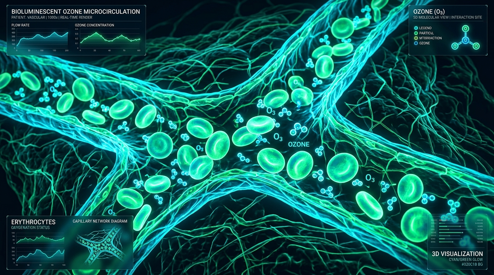

Efectos Biológicos
- ✓ Entrega de Oxígeno Tisular: Facilita la liberación de O2 desde los eritrocitos en microvasos.
- ✓ Estimulación Enzimática: Activa la superóxido dismutasa y catalasa internas.
Aplicación médica de mezclas de oxígeno-ozono (O3) en dosis terapéuticas micro-reguladas para activar la microcirculación y la modulación del estrés oxidativo.
